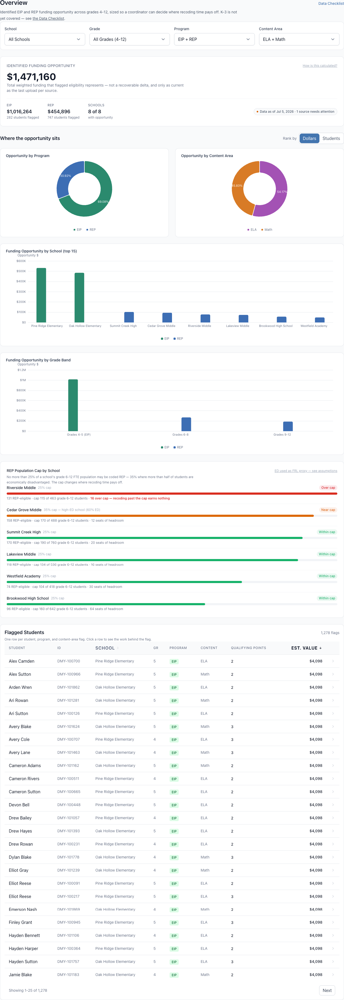
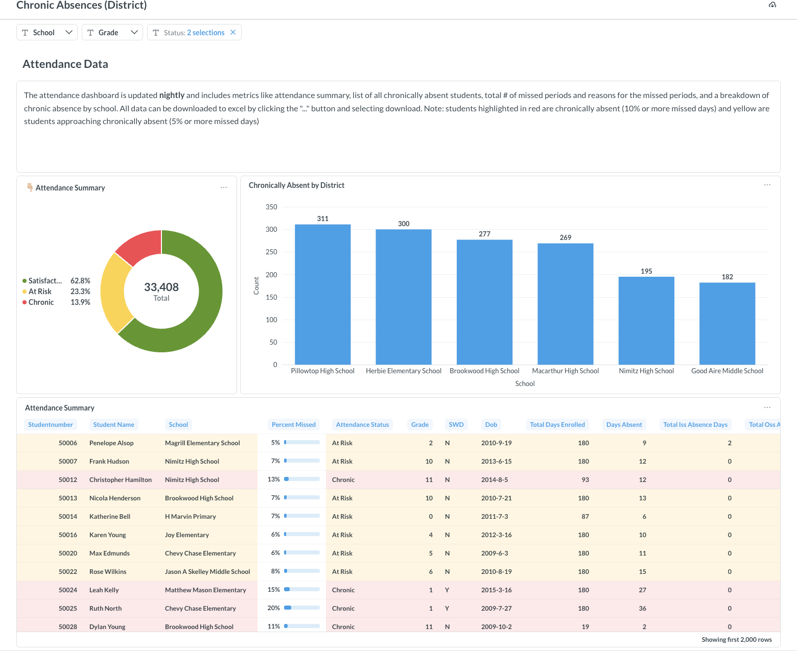
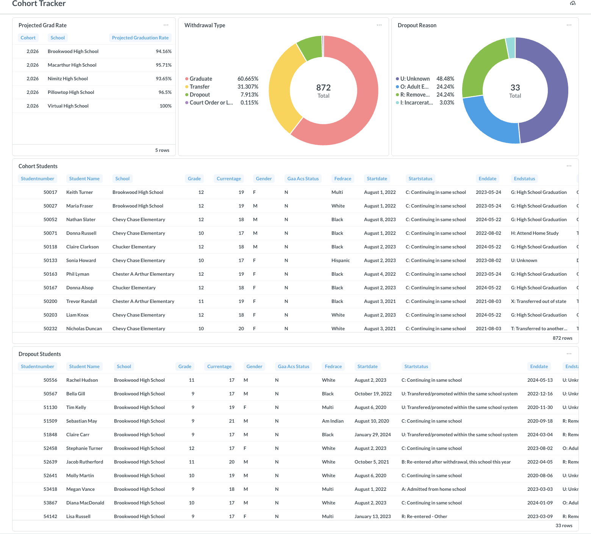

Standard Education builds simple, powerful data tools for school districts — turning the numbers you already have into funding you can capture, students you can reach, and decisions you can defend. Explore a few of them below.
See where your district may be leaving state funding on the table vs. similar districts.
Pinpoint the specific students behind every funding opportunity, school by school.
Track chronic absence across the district and catch at-risk students early.
Follow graduation cohorts, withdrawals, and dropout reasons in one view.
From the funding opportunity down to the individual flagged students — the working tool behind the scorecard.

Chronic-absence tracking across the district, updated nightly, down to the student.

Graduation cohorts, withdrawal types, and dropout reasons — with the student-level detail behind each.
